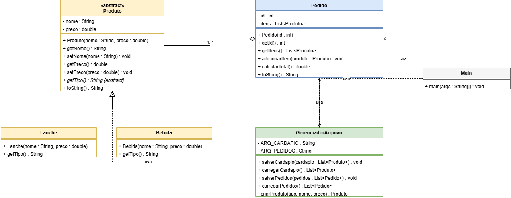

Sistema de Pedidos de Lanchonete.
Gestão de pedidos em estabelecimentos de alimentação (lanchonetes).
Em muitas lanchonetes pequenas, o cardápio e os pedidos são anotados em papel, o que causa erros no cálculo do valor total, perda de informações e dificuldade para consultar pedidos já realizados.
Permitir o cadastro dos itens do cardápio (lanches e bebidas), a montagem de pedidos com cálculo automático do total e o armazenamento de todas as informações em arquivos, de forma que os dados permaneçam disponíveis após o encerramento do programa.
| Código | Descrição |
|---|---|
| RF01 | O sistema deve permitir cadastrar itens no cardápio, informando tipo (lanche ou bebida), nome e preço. |
| RF02 | O sistema deve listar todos os itens cadastrados no cardápio. |
| RF03 | O sistema deve permitir criar um pedido escolhendo um ou mais itens do cardápio. |
| RF04 | O sistema deve calcular automaticamente o valor total do pedido somando os preços dos itens. |
| RF05 | O sistema deve salvar cardápio e pedidos em arquivos de texto (escrita) e carregá-los ao iniciar (leitura). |
| RF06 | O sistema deve listar todos os pedidos já realizados, com seus itens e totais. |
| RF07 | O sistema deve oferecer interação por meio de um menu no terminal. |

| Conceito | Onde aparece |
|---|---|
| Encapsulamento | Atributos privados com getters/setters em Produto e Pedido. |
| Herança | Lanche e Bebida herdam de Produto. |
| Classe abstrata | Produto não pode ser instanciada diretamente. |
| Polimorfismo | O método getTipo() é implementado de forma diferente em Lanche e Bebida; a lista de Produto guarda ambos. |
| Composição/Agregação | Um Pedido possui uma lista de Produtos. |